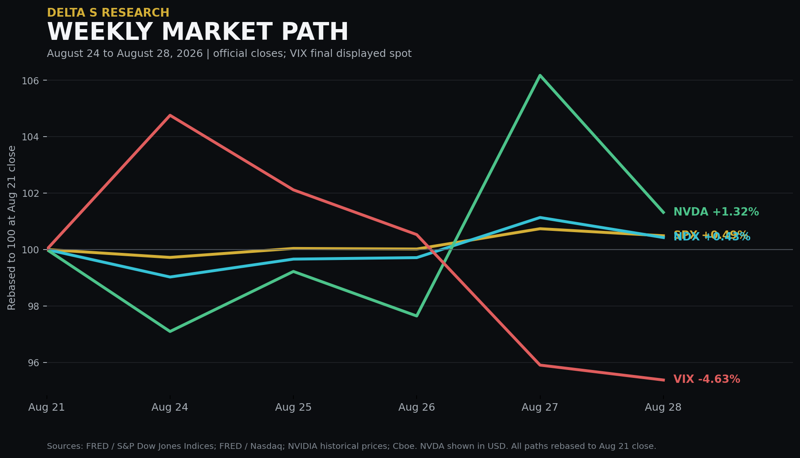
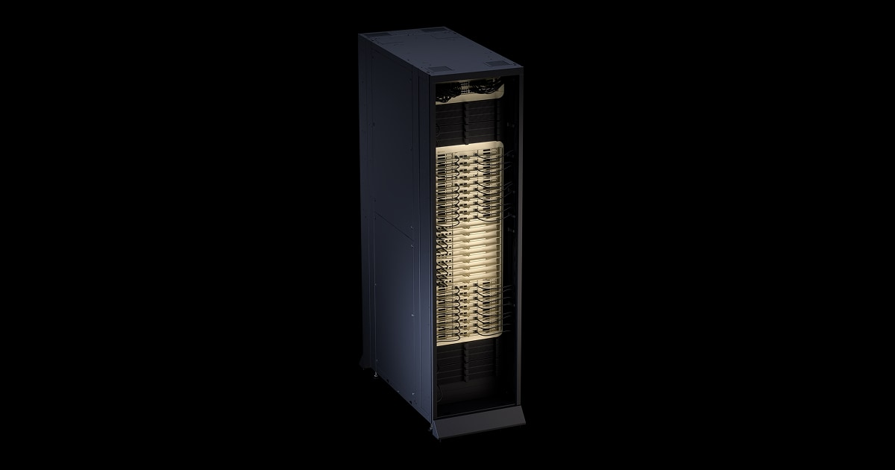
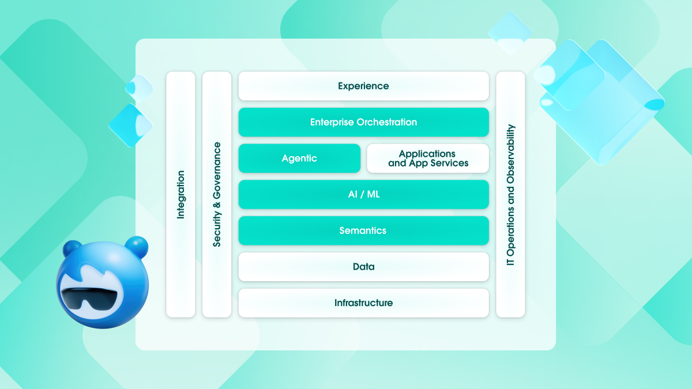
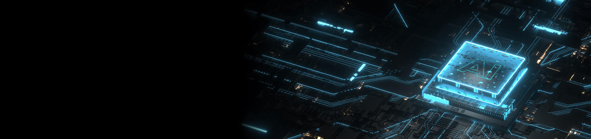
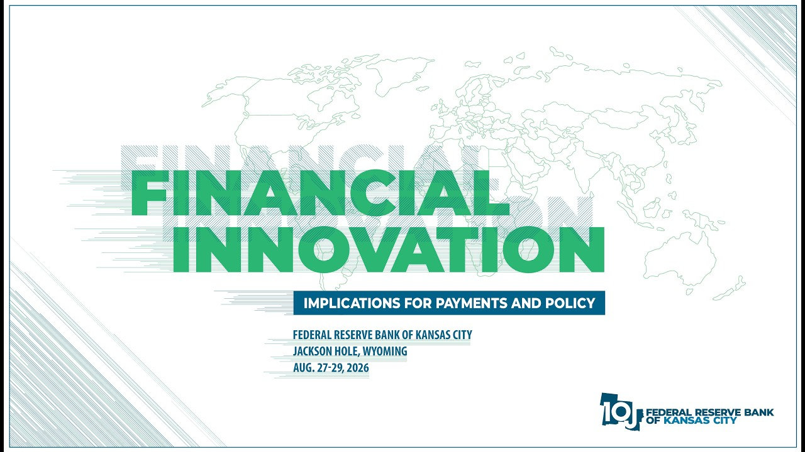

The Week in Five Bullets
- The broad indexes advanced, but the week did not produce a uniform risk-on signal. SPX gained 0.49% to 7,711.76 and NDX gained 0.42% to 29,433.43. The Nasdaq Composite and DJIA each added about 0.8% and 0.5%, while the Russell 2000 lost 1.5%. Large-cap earnings strength offset weaker small-cap breadth.
- NVIDIA proved that AI compute demand remains supply constrained. Fiscal second-quarter revenue reached US$96.2 billion, up 106% year over year, with Data Center revenue of US$89.0 billion, up 117%. Third-quarter guidance of US$108.0 billion excludes Data Center compute revenue from China, keeping the focus on non-China deployment capacity.
- Enterprise software and cybersecurity converted AI activity into measurable revenue. Salesforce reported US$11.3 billion of revenue and Agentforce ARR above US$1.5 billion, up more than 240% year over year. CrowdStrike delivered US$1.47 billion of revenue, US$5.84 billion of ending ARR and US$332.8 million of net new ARR.
- Inflation limited the valuation benefit from resilient growth. July headline PCE inflation was 3.7% year over year and core PCE was 3.3%. Real PCE was essentially unchanged in July even as second-quarter real final sales to private domestic purchasers were revised to a 4.2% annualized gain.
- Index volatility remained low while event risk stayed expensive at the constituent level. The final displayed VIX spot was 14.43, down 0.70 point from August 21. NVIDIA rose 8.74% on Thursday and fell 4.57% on Friday, while Marvell lost 10.3% on Friday, showing why a quiet SPX can coexist with large single-name gaps.
The Week's Dominant Narrative
- The core demand question shifted from whether AI spending exists to whether the supply chain can deliver it. NVIDIA's revenue increased 18% sequentially and its 75.0% gross margin held despite a larger system mix. Management's US$108.0 billion third-quarter outlook indicates that accelerator demand remains visible, but delivery now depends on racks, networking, memory, cooling and power as a coordinated system.
- Rack-scale economics are replacing standalone GPU economics. NVIDIA described revenue intensity rising from roughly US$18 billion per gigawatt for Hopper to US$25 billion for Grace Blackwell and about US$40 billion for Vera Rubin. The trading implication is that power availability and system integration can govern revenue timing even when end demand remains strong.

- Software results supplied evidence of monetization rather than only usage. Salesforce's Agentforce and Data 360 ARR approached US$3.9 billion, while current remaining performance obligation reached US$33.5 billion. CrowdStrike's 25% ARR growth and 101% growth in ARR from Falcon Flex adopters showed that AI-related security demand can expand contract scope as well as user activity.

- Custom silicon still faces an asymmetric expectations bar. Marvell reported US$2.74 billion of quarterly revenue and guided to US$3.15 billion for the next quarter, both slightly above expectations, yet the shares fell 10.3% on Friday. The market treated a narrow beat as insufficient after a year-to-date gain above 160%, particularly where the incremental Google custom-chip contribution did not clearly exceed prior assumptions.
- Policy became the valuation governor after earnings validated demand. Warsh stated that the Fed must be confident underlying inflation is moving clearly and sufficiently quickly toward 2%. Fed-funds futures moved the September 16 hike probability from 35.9% before the speech to 57.4%, so the week ended with better earnings visibility but less confidence in a stable front-end discount rate.

What Volatility Markets Priced
- VIX fell even though Friday ended with a hawkish policy repricing. The index's final displayed spot was 14.43 versus 15.13 on August 21, a 4.63% weekly decline. SPX rose 0.49%, and Friday's 0.25% SPX loss did not generate sustained index-level hedging demand.
- Implied volatility retained a wide premium to the latest realized path. Five-session SPX realized volatility was 6.69%, calculated from close-to-close log returns using sample standard deviation and square-root-of-252 annualization. VIX exceeded that backward-looking estimate by 7.74 volatility points, although the five-day window is deliberately responsive rather than structural.
- The VIX futures curve priced more risk beyond the immediate week. The September 16 VIX future settled at 16.9353, the October 21 contract at 18.7002 and the November 18 contract at 19.3599. Relative to 14.43 spot, that positive slope preserved a material roll cost for a static long-volatility position.
- The latest verified dispersion and correlation readings still pointed to offsetting single-name risk. The latest public end-of-day readings showed COR1M at 9.59 and the latest verified prior DSPX close at 33.52. A reliable Friday DSPX close was not available at the cutoff, so no Friday-to-Friday dispersion claim is made.
- Earnings gaps, not the index close, carried the larger option risk. NVIDIA moved from a 1.59% Wednesday decline to an 8.74% Thursday gain and then a 4.57% Friday loss. CrowdStrike rose about 21% on Thursday while Marvell fell 10.3% Friday, confirming a cross-section in which index volatility understates event concentration.
Cross Asset Signals
- The 10-year Treasury par yield closed at 4.73%. It was 1 basis point below the August 21 close, but Friday's Warsh reaction reversed part of the midweek decline. The weekly finish therefore masks a shift from long-end relief toward front-end tightening risk.
- The 30-year Treasury par yield closed at 5.22%. The 5 basis point weekly decline was larger than the move in the 10-year. Long-end yields benefited from earlier retracement, while the policy speech primarily raised the expected path of short rates.
- Oil gave back part of the prior week's supply premium. October Brent futures settled at US$89.31 per barrel, down 5.4% for the week, while WTI settled at US$83.40, down 4.2%. Reports of higher regional shipments and possible alternative routes reduced the immediate scarcity premium without resolving the underlying geopolitical constraint.
- The dollar and gold moved in opposite directions after policy repricing. DXY closed at 99.70, up 0.91% from 98.80, while front-month COMEX gold settled at US$4,478.10 per troy ounce, down 3.25%. Higher expected short rates restored the dollar's carry advantage and reduced demand for non-yielding exposure.
- Bitcoin did not extend the prior week's liquidity-driven gain. The Friday spot reference was US$77,413.77, about 0.9% below the August 21 exchange daily close of US$78,126.63. The move was small relative to the prior 24.1% weekly gain, but it coincided with the firmer dollar and hawkish policy repricing.
- Fund flows were defensive before the major events, not uniformly anti-technology. U.S. equity funds lost US$22.33 billion in the week through August 26, the largest outflow since March, while bond funds received US$7.12 billion for a nineteenth consecutive inflow week. Technology funds still gained US$1.81 billion, which is more consistent with concentration and event-risk management than a full AI exit.
- The September policy contract moved more than the weekly Treasury close. Fed-funds futures placed a 57.4% probability on a September rate increase after Warsh spoke, up from 35.9% beforehand. The source is the September 16 meeting contract, not a prediction market, and the probability can change materially with next week's labor data.

Structural Fragilities
- Demand visibility does not eliminate delivery risk. NVIDIA's system roadmap requires GPU, CPU, HBM, networking, cooling and power to arrive together. A single bottleneck can shift revenue between quarters without changing the long-run order book, creating sharp reactions to timing language.
- The AI trade is becoming more capital intensive as each generation raises revenue per gigawatt. Higher system value supports supplier revenue, but it also raises customer financing requirements and the cost of delays. If credit spreads or power interconnection timelines worsen, strong end demand can coexist with slower recognized revenue.
- Low index volatility still depends on low correlation. A VIX near 14 can remain consistent with 10% to 20% earnings moves when gains and losses offset across constituents. If a common capex or rate shock aligns those moves, correlation can rise and index volatility can adjust faster than single-name implied volatility falls.
- Software monetization metrics are not yet interchangeable. ARR, cRPO, delivered work units and revenue each describe a different stage of adoption. Capitalizing usage growth as recurring revenue before contract expansion appears in ARR or cRPO would overstate the speed of economic conversion.
- The next macro week can overturn the policy interpretation quickly. JOLTS, ADP, ISM and the August employment report arrive before the September FOMC meeting. A weak labor sequence could reduce hike pricing, while a firm employment and prices mix would reinforce Warsh's assessment that financial conditions are not clearly restrictive.
Demand was verified in earnings; the cost of capital was repriced in policy.
What We Are Watching Next
- Tuesday, September 1, 10:00 AM ET: July JOLTS. Openings, quits and hires will test whether low payroll growth reflects weaker labor demand or continued low turnover.
- Tuesday, September 1, 10:00 AM ET: August ISM Manufacturing PMI. New orders, employment and prices paid will show whether industrial demand is absorbing higher input costs.
- Wednesday, September 2, 8:15 AM ET: August ADP National Employment Report. The private-payroll estimate is an imperfect guide to Friday's report, but it can move front-end rates when policy odds are near even.
- Wednesday, September 2, 2:00 PM PT: Broadcom fiscal third-quarter results. AI semiconductor revenue, custom accelerator visibility, networking demand and VMware execution will determine whether NVIDIA's demand signal carries into the merchant and custom-silicon stack.
- Thursday, September 3, 8:30 AM ET: Revised second-quarter productivity and unit labor costs. The revision will help separate supply-side productivity from inflationary wage pressure.
- Thursday, September 3, 10:00 AM ET: August ISM Services PMI. The prices, employment and new-orders components matter directly for the persistence of core services inflation.
- Friday, September 4, 8:30 AM ET: August Employment Situation. Payrolls, unemployment, participation and average hourly earnings will be the final major labor test before the September 15 to 16 FOMC meeting.
Sources and References
- Equities: FRED: S&P 500 daily closes
- Equities: FRED and Nasdaq: Nasdaq 100 daily closes
- Equities: AP: weekly performance of major U.S. indexes
- Market close: Reuters: U.S. stocks after Warsh's Jackson Hole remarks
- Volatility: Cboe: VIX spot index
- Volatility: Cboe: August 28 VIX futures settlements
- Volatility: Cboe: S&P 500 Dispersion Index
- Volatility: Cboe: implied correlation indexes
- Rates: U.S. Treasury: daily par yield curve rates
- Inflation and spending: BEA: July personal income and outlays
- Growth: BEA: second estimate of second-quarter GDP and corporate profits
- Orders: U.S. Census Bureau: July durable goods
- Policy: Federal Reserve: Chairman Warsh's Jackson Hole remarks
- Policy probability: CME FedWatch: 30-Day Fed Funds futures methodology
- AI compute: NVIDIA: fiscal second-quarter 2027 results
- AI compute: NVIDIA: fiscal second-quarter earnings call transcript
- Software: Salesforce: fiscal second-quarter 2027 results
- Cybersecurity: CrowdStrike: fiscal second-quarter 2027 results
- Custom silicon: Marvell earnings and market reaction
- Fund flows: Reuters and LSEG Lipper: U.S. weekly fund flows
- Cross asset: Reuters: dollar, Bitcoin and oil at the August 28 close
- Gold: Dow Jones: front-month COMEX gold weekly settlement
- Dollar: DXY historical closes
- Calendar: BLS: September 2026 release schedule
- Calendar: ISM: Manufacturing and Services PMI release calendar
- Calendar: ADP National Employment Report calendar
- Calendar: Broadcom: fiscal third-quarter earnings date